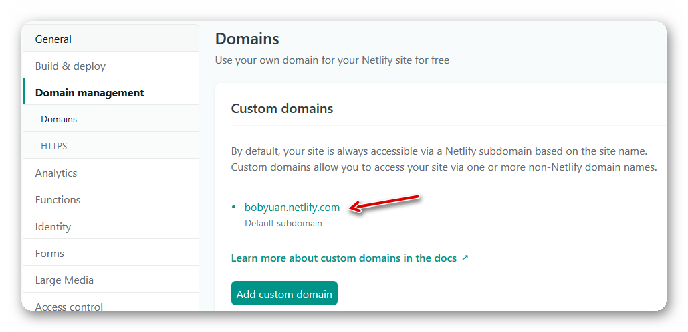

利用 VuePress 搭建博客网站
# 博客网站的需求
博客，是 Blog 音译的名称，被称为网络日记。通常是指个人在网络上出版、发表和张贴个人文章，或者由个人管理，不定期发布文章的网站。博客上的文章通常以网页形式发布，根据张贴时间倒序排列。通常具备 RSS 订阅功能。博客是继论坛（BBS）、即时通讯（IM）之后出现的一种网络交流方式，广受网友的欢迎，是互联网时代的个人网络日记，它代表着新的媒体和生活方式。一个典型的博客结合了文字、图像、以及其它相关的媒体，可以让读者以互动的方式留言。大部分的博客网站以文字内容为主，但也有一些博客专注在艺术、摄影、视频、音乐、播客等各种主题。博客已经成为当代社会媒体网络的一部分。
很多人在工作或学习到一定程度后发现了写博客的重要性，一方面帮助自己梳理知识，让自己在某一个领域持续深耕，成为该领域专家；另一方面也可以帮助他人解决类似问题，获得知名度和成就感。
博客文章需要发布到互联网上，有两个选择：
第一个选项，在博客平台上写，是最简单的选择。这种方式有优点也有缺点。优点是申请 一个账号即可使用，通常是免费的。不需要安装软件，用浏览器登录后即可写文章，没有任何技术难度，适合于非技术人员。平台方还能为此博客空间带来足够的访问流量。缺点是，文章的版权属于平台（或者平台要求共同拥有知识产权），发布的文章需要经过平台方审核——不能包含敏感词，不能涉及有争议或者不允许的话题等。审核通过后才能发布，且平台要在文章页面里插播广告。
第二个选项，自建博客平台，有一定技术挑战，适合技术人员。此选项的优点是自己掌控和拥有一切，版式、颜色、字体、是否播放广告、是否允许留言等，都是自己说了算。发布文章不需要审核（当然，必须遵守当地的法律）。缺点也很明显，例如需要自己购买域名和托管服务器，消耗时间和精力在其他方面——包括网站搭建、运维、软件升级、数据备份等。最致命的是，访问流量依托于搜索引擎优化，访问流量可能很小甚至没有。
作为技术人员，我更倾向于第二个选项，即自建博客平台。必须满足的需求有：
完全免费。从任何方面来说都免费，完全没有费用！这点很重要，它能让自建的博客平台“永续生存”，拥有最长的生命力。理论上，只要相关的底层服务提供商没有全部倒闭光，此博客平台就能健在。
容易搭建、使用和维护。不需要太多的技术，容易学习、容易搭建、容易使用，容易维护。即便作为技术人员，也希望摆脱技术方面的负担，将精力集中于写博客文章上。
版本控制，数据不会丢失。博客文章应该有版本控制，可以回滚到之前任意一个历史版本，也方便比较当前的修改和前一个版本的差异。在版本控制的基础上，数据不会丢失，数据的安全性得到了一定程度的保障。
快速。指网页的访问速度快。特别是在中国大陆特殊的网络环境下，不被屏蔽是第一位的，再就是页面的响应速度要快，从而让用户获得良好的使用体验。
跨平台。页面自适应，适用于 PC 浏览器，还适用于平板、手机等移动设备的浏览器访问。
基于上述需求，用静态网页生成器——即通过编译生成静态的 HTML 网站再发布，这种方案成为最优选择。
# VuePress 介绍
VuePress （网址是 https://vuepress.vuejs.org/）是一个使用 Vue.js 的静态网站生成工具，来自知名的前端框架 Vue.js 的作者尤雨溪（Evan You）。VuePress 的目的是供软件开发商用于制作在线的用户手册文档，即作为工具软件，用来生成静态网站，便于发布到互联网上。
与传统动态网站（如 WordPress）相比，静态网站生成器的主要优势体现在：
响应速度快，资源占用率低。 静态博客站点页面都是静态页面，访问时无需查询数据库，因此服务器端响应速度快，服务器资源占用率低。再加上客户端浏览器的缓存，让用户使用体验有质的飞跃。
安全性、易维护性高。 由于不需要访问数据库，静态网站可以避免很多网页攻击，安全性较高。动态网站不可避免的数据库管理工作，特别是数据备份，版本升级时的数据迁移等，在静态网站方案中都不再需要，从而避免了这部分维护工作。
易于管理和备份，自动化。 静态网站可以使用 Markdown 来撰写博客文章，比起动态网站通过内容管理系统的用户界面来创建内容要方便高效得多。再加上 Markdown 是纯文本，便于版本控制，整个网站的全部内容就是纯文本文件的集合——包括 Markdown 写的文章，以及一些设置一次就不怎么修改的配置文件。像是计算机程序的源代码一样，只需要用静态网站生成工具编译一下，就可以得到所需的静态网站。再通过自动化构建工具让它自动触发编译和发布过程，我们只需要提交到版本控制仓库中，剩下的编译和发布工作就全是自动化的，完全不需要人工去操心，非常方便。
注意：
- Markdown 是一种轻量级的“标记语言”，它用简洁的语法代替排版。Markdown 的标记语法简洁明了、易于学习掌握和使用，目前被越来越多的程序员、写作爱好者、撰稿者广泛使用。Markdown 的常用的标记符号不超过十个，这种相对于更为复杂的 HTML 标记语言来说，Markdown 可谓是十分轻量级的，学习成本也很低。只需要几分钟熟悉这种语法规则，写作就会有一种如虎添翼的感觉。
- Markdown 的排版功能较弱，不适用于某些要求高的应用场景，如书籍、杂志、论文（用到数学公式）等排版。有这方面需要的读者，可以考虑 reStructuredText 或者 LaTeX。
- Markdown 存在一个较严重的问题，就是没有一个统一的标准，不同的编辑器对它进行扩展，导致不同的版本较多，给人感觉有点混乱。当然，若您只使用大家都支持的基础标记（大多数情况下也够用），那是没问题的。
Markdown 编辑器的选择很多，在 Windows 上可以考虑以下几个：
Typora （网址是 https://typora.io/） 它是闭源的商业软件，在 Beta 阶段都将是免费的。它的特点是所见即所得，且在功能上没有限制，功能强大丰富，甚至可以用来作图（http://support.typora.io/Draw-Diagrams-With-Markdown/）。它支持简体中文界面语言，在帮助菜单里面（Help | Markdown Reference）还带有 Markdown 的语法参考的英文文档。作为首选推荐。
Visual Studio Code （网址是 https://code.visualstudio.com/） 它是微软为软件开发人员推出的代码编辑器，功能强大复杂，可作为多种语言的集成开发环境。开源免费，跨平台。如果您是开发人员，可以考虑它，既可以用来开发程序，又可以编写文档。
MarkdownPad （网址是 http://www.markdownpad.com/） 它是闭源的商业软件，免费版有一些功能限制。它是分左右两栏的编辑器，左边是可编辑的 Markdown 源文件，右边是实时的网页预览。注：此软件自2013年3月份后，已经多年没有更新了。
近年来，静态网站生成器成了动态网站的替代方案，特别受到开发人员的欢迎。人们用它来制作博客（Blog）、写 文档和电子书、发布个人简历等用途。静态网站生成器工具软件有很多，从其功能和易用性考虑，VuePress 是新秀。VuePress 本来的设计初衷是编写软件的文档，但自 V0.x 起有许多用户用它来建博客，因此在 V1.x 版本中，官方发布了支持博客的插件，满足了这部分用户的使用需求。 这里有一篇博客文章对它做了一个介绍：
下面将介绍如何使用 VuePress 来创建一个个人博客网站。
# 搭建博客网站
# 1. 安装 VuePress
我的主力电脑安装的是 Windows 10 专业版64位操作系统，Git 的环境略过，仅就安装 VuePress 的环境做一简要叙述。
下载安装 Node.js 和 Yarn。例如，在本文写作的时候，下载安装的是
node-v12.16.2-x64.msi和yarn-1.22.4.msi。注意： yarn 的二进制可执行程序，位于
%LOCALAPPDATA%\Yarn\bin，应当被添加到 当前用户 的 PATH 环境变量中。参照 VuePress 的官方文档，安装 VuePress ：
# Install vuepress. yarn global add vuepress # Upgrade. #yarn global upgrade vuepress新打开一个命令行窗口，检查一下版本：
vuepress --version【可选】按照 VuePress 的文档说明，试试建立一个网站，体验一下效果。
# 新建一个 markdown 文件 echo # Hello VuePress! > README.md # 开始写作，用浏览器打开看效果 vuepress dev # 构建生成静态文件（输出到 .vuepress\dist 文件夹中） vuepress build
# 2. 搭建 Blog 平台
官方提到了一些博客主题：
这些看起来都太简陋。
另有2个主题，之前在 VuePress 官方网页里出现过的，现在已经被移除。个人猜想其原因可能是，这两个主题没有完全在官方插件上做扩展，而是做了过多的底层定制和修改，在未来官方博客插件升级时，有可能不兼容。
- vuepress-theme-modern-blog，演示 。此主题有点过于华丽。
- vuepress-theme-reco，演示 - 午后南杂。此主题简洁优雅。
个人偏好，我选择了vuepress-theme-reco主题，下面是搭建步骤。
按官方文档的说明，使用 yarn 来安装：
# Install the theme.
yarn global add @vuepress-reco/theme-cli
# Upgrade.
#yarn global upgrade @vuepress-reco/theme-cli
# 初始化（需要回答一些问题，最后一个选择： blog）
theme-cli init my-blog
# 安装
cd my-blog
yarn install
这将生成一个博客网站模板“my-blog”，其中“docs”文件夹里面是主要的源文件，包括配置和博客文章的 Markdown 文件。我们可以在此基础上，进行修改和定制。
# 打开本地服务
# Or: vuepress dev docs
yarn dev
# 编译生成静态网页
yarn build
打开本地服务后，VuePress 的开发环境可通过浏览器访问 http://localhost:8080/。在docs\.vuepress\config.js中设定，编译生成的静态网页将位于“public”文件夹中。
在生成的模板上，我随即更新了 package.json 中的依赖，使用最新的版本。最新的版本号可以在这里找到：
- VuePress: CHANGELOG.md
- vuepress-theme-reco: CHANGELOG.md
{
"devDependencies": {
"vuepress": "1.4.1",
"vuepress-theme-reco": "1.2.2"
},
}
然后升级本地的依赖包：
yarn install
yarn upgrade
博客文章即 Markdown 文档。例如，其他类（other）的文章之一：《利用 VuePress 搭建博客网站》，放在 docs\views\other\guide\文件夹中。此文章的文件命名为 README.md，它将作为http://localhost:8080/views/other/guide/的首页。关于图片文件的引用，有一个小技巧。
- 在
docs\.vuepress\public\views\和docs\views\中建立同样的目录结构。其中前者是 VuePress 要求存放图片文件的地方，后者是 Markdown 博客文章 Markdown 文件的存放地方。 - 为了让 Typora 编辑器打开 Markdown 文件时能够显示图片，同时又能让图片文件位于 VuePress 所要求的文件夹，我们需要在 Markdown 文件所在的文件夹中，建立一个目录连接（Directory Junction），让它指向 VuePress 要求的文件夹中（那里存放着图片文件）。
举个例子， docs\.vuepress\public\views\other\guide\asset\ 中，存放了几张图片文件。在 Markdown 文件README.md 所处的文件夹 docs\views\other\guide\中，我们建立了一个 asset 目录链接，它以相对路径的方式指向了docs\.vuepress\public\views\other\guide\asset\。
REM We would like to create a directory junction "asset" from:
REM docs\views\other\guide\
REM to:
REM docs\.vuepress\public\views\other\guide\asset\
REM First, check if the relative path is correct:
CD /D docs\views\other\guide\
DIR ..\..\..\.vuepress\public\views\other\guide\asset
REM Then, run the command to create the directory junction:
MKLINK /J asset ..\..\..\.vuepress\public\views\other\guide\asset
另外，为了避免将目录链接里面的文件重复加入到 Git 的版本控制，我们需要在 .gitignore 中，添加一条设置，忽略建立的目录链接。例如：
# ignore directory junctions.
/docs/views/other/guide/asset/
打开本地服务，一边用 Typora 编辑 Markdown 文章，一边用浏览器（http://localhost:8080）看效果。每次保存 Markdown 文件，浏览器的结果会自动更新（不需要手动刷新），非常方便快捷。
# 打开本地服务
# Or: vuepress dev docs
yarn dev
本地开发满意后，在 GitHub （也可以是 GitLab等类似的版本控制托管服务）中建立一个代码库，将本地代码提交到代码库中。
# 3. 发布到 Netlify
发布到 Netlify.com，只需要简单几步：
注册 Netlify 的账号并登录，需要提供一个电子邮件。
新建一个项目，在设置里面填入 GitHub 代码库的链接，填写构建的命令和输出文件夹。
 按“Deploy site”按钮，耐心等候5分钟左右时间，让构建流程正常结束。
按“Deploy site”按钮，耐心等候5分钟左右时间，让构建流程正常结束。构建成功后，设置定制的域名。  例如这里，我设置了定制的域名“bobyuan”，于是可以这样访问此博客网站： https://bobyuan.netlify.com/
【可选】每次提交到 GitHub，Netlify 将自动构建并发布网站。为了了解构建状态，在首页（README.md）中添加一个“status badge”。

# 小结
本文简明扼要地给出了基于 VuePress 搭建个人博客网站的全过程，有些技术细节没有提及，读者应该也是技术人员，相信您有能力自行探索或调整。希望本文对您有所帮助。